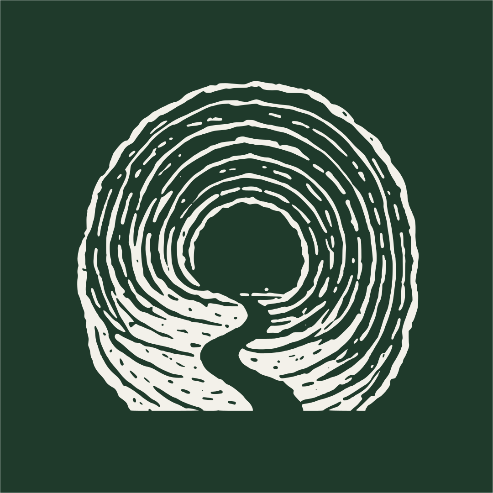

Trailhead
New here? Start at the Trailhead.
The PEXE Lab is two people and two open questions — what is it to teach and what is it to learn? We think about them in public through essays, podcasts, and ongoing research. Here's a trail through our thinking to get you started:

Read · one essay What David Abram's Spell of the Sensuous Might Teach Us About Education A clear way into how we're thinking about education and the world it resides in. Listen · one episode Ep. 8 — Zach Juliano: Sean's Bad Back and Phenomenological Physical Therapy Listen to an episode of The Line where we work through the social ethics of AI as they are created. Say hello · write to us If your questions are our questions Then send us a note. We are always interested in conversations with others thinking the way we are.Want the whole picture of how we think? That lives in the Orientation →